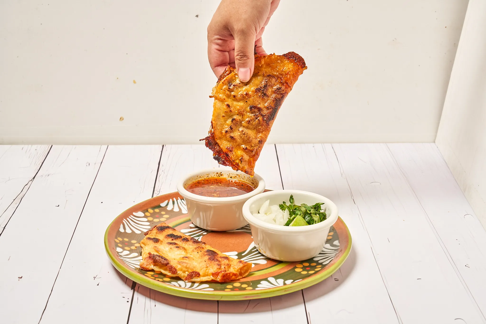

Tradition you can taste.
Rooted in tradition, built on flavor, and served with pride.


Bold Mexican flavor, made with care.
Los Pastores was created with one goal in mind—to bring authentic, bold Mexican flavors to the community. Inspired by traditional recipes and street-style cooking, every dish is crafted with care, using fresh ingredients and time-honored techniques.
Fresh ingredients.
Real flavor.
We believe great food starts with great ingredients. From marinated meats prepared in-house to fresh toppings and homemade recipes, everything we serve is made to deliver quality and consistency in every bite.
Explore the menu

A table for friends, family, and neighbors.
Proudly located in Fort Worth, Los Pastores is more than just a restaurant—it’s a place where friends and families come together to enjoy authentic food in a welcoming atmosphere.
Whether you’re stopping by for a quick bite or gathering with loved ones, we’re here to serve you with the same passion and flavor that define who we are.

“Food made to bring people together.”
Find us in Fort Worth.
We proudly serve our guests from our Fort Worth location, where bold flavors, fresh ingredients, and authentic recipes come together in every dish.
Fort Worth, TX
Check Google or call for today’s hours.